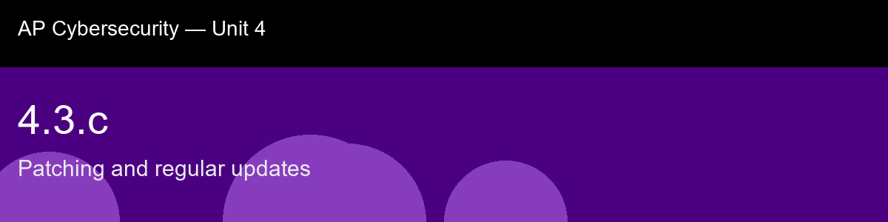

4.3.c recap, Patching and regular updates
Nice work today. Here's what to lock in:
- Recap handout:
post-lecture-handout.docx
- Simulation: SimLab
- Self-check quiz: due before next class
The big picture: The zero-day versus n-day distinction is the one piece of vocabulary here worth never confusing, because it flips the popular narrative about breaches on its head: the dramatic, expensive zero-day, exploited before any fix exists, is actually rare, while the overwhelming majority of real breaches exploit n-day vulnerabilities, flaws with a perfectly good patch sitting unapplied for months. That should change how you read the "why organizations delay patching" section, compatibility risk, downtime, scale, legacy systems, not as excuses but as the genuine engineering costs that make the patch gap a real tradeoff rather than pure negligence, which is exactly why mature patch management runs as a formal process (inventory, prioritize, test, deploy, verify) rather than an instinct to patch everything instantly. Notice, too, that the CVSS severity score reappears almost unchanged as the "weight" concept in 4.4.c's compromise scoring, this course keeps reaching for the same idea, turning fuzzy risk into a number you can set a threshold against, because "patch everything with equal urgency" is exactly as unworkable here as "defend against every threat equally" was back in Unit 2's risk-management atom.
Key terms to lock in:
- Patch, a vendor-released software update that fixes a bug, often including a security fix.
- CVE (Common Vulnerabilities and Exposures), a public, unique identifier assigned to a disclosed vulnerability.
- CVSS (Common Vulnerability Scoring System), a 0-10 standardized severity score for a vulnerability, based on exploitability and impact.
- Zero-day, a vulnerability being exploited before any patch exists.
- N-day, a vulnerability for which a patch exists but has not yet been applied to the target.
- Patch gap, the time between a patch's release and an organization actually deploying it.
- Patch management, the formal process of inventorying, prioritizing, testing, deploying, and verifying patches across an organization's assets.
- End-of-life (EOL) software, software no longer receiving vendor patches, requiring compensating controls instead.
Common misconceptions -- don't fall for these:
- "Zero-days are the main way organizations get breached." → Most real-world breaches exploit n-day vulnerabilities, known flaws with an available patch that simply was not applied in time. Zero-days are rare and expensive for attackers by comparison.
- "You should always apply every patch the instant it's released." → Untested patches carry real compatibility and downtime risk. Mature patch management tests and prioritizes by severity and exploitation status rather than patching reflexively, while still moving fast on critical, actively-exploited flaws.
- "If a system still works fine, it doesn't need patching." → A system can function perfectly while still containing a serious, publicly known, unpatched vulnerability. Functionality and security posture are independent.
Learning objective(s): 4.3.B, 4.3.C

## 4.3.c recap, Patching and regular updates
Nice work today. Here's what to lock in:
- Recap handout: `post-lecture-handout.docx`
- Simulation: SimLab
- Self-check quiz: due before next class
**The big picture:** The zero-day versus n-day distinction is the one piece of vocabulary here worth never confusing, because it flips the popular narrative about breaches on its head: the dramatic, expensive zero-day, exploited before any fix exists, is actually rare, while the overwhelming majority of real breaches exploit n-day vulnerabilities, flaws with a perfectly good patch sitting unapplied for months. That should change how you read the "why organizations delay patching" section, compatibility risk, downtime, scale, legacy systems, not as excuses but as the genuine engineering costs that make the patch gap a real tradeoff rather than pure negligence, which is exactly why mature patch management runs as a formal process (inventory, prioritize, test, deploy, verify) rather than an instinct to patch everything instantly. Notice, too, that the CVSS severity score reappears almost unchanged as the "weight" concept in 4.4.c's compromise scoring, this course keeps reaching for the same idea, turning fuzzy risk into a number you can set a threshold against, because "patch everything with equal urgency" is exactly as unworkable here as "defend against every threat equally" was back in Unit 2's risk-management atom.
**Key terms to lock in:**
- **Patch**, a vendor-released software update that fixes a bug, often including a security fix.
- **CVE (Common Vulnerabilities and Exposures)**, a public, unique identifier assigned to a disclosed vulnerability.
- **CVSS (Common Vulnerability Scoring System)**, a 0-10 standardized severity score for a vulnerability, based on exploitability and impact.
- **Zero-day**, a vulnerability being exploited before any patch exists.
- **N-day**, a vulnerability for which a patch exists but has not yet been applied to the target.
- **Patch gap**, the time between a patch's release and an organization actually deploying it.
- **Patch management**, the formal process of inventorying, prioritizing, testing, deploying, and verifying patches across an organization's assets.
- **End-of-life (EOL) software**, software no longer receiving vendor patches, requiring compensating controls instead.
**Common misconceptions -- don't fall for these:**
- "Zero-days are the main way organizations get breached." → Most real-world breaches exploit n-day vulnerabilities, known flaws with an available patch that simply was not applied in time. Zero-days are rare and expensive for attackers by comparison.
- "You should always apply every patch the instant it's released." → Untested patches carry real compatibility and downtime risk. Mature patch management tests and prioritizes by severity and exploitation status rather than patching reflexively, while still moving fast on critical, actively-exploited flaws.
- "If a system still works fine, it doesn't need patching." → A system can function perfectly while still containing a serious, publicly known, unpatched vulnerability. Functionality and security posture are independent.
**Learning objective(s):** 4.3.B, 4.3.C